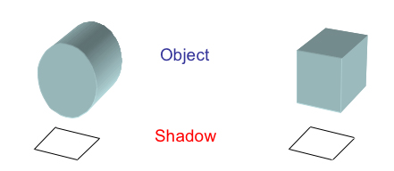
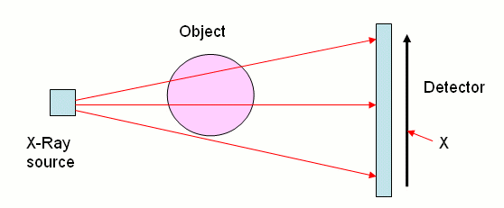

Bringing Mathematics to lifeSouce : Chris Budd & Cathryn Mitchell
Table of Contents:
1. Introduction
2. Fighting Crime with Inverse Problems
3. Saving Lives with Inverse Problems
4. Maths Saves the Day
1. IntroductionInverse problems are like mathematical mysteries—where you work backward from the outcome to figure out the cause, such as figuring out the shape of an object just by looking at its shadow. To solve this, we create a mathematical model — to trace back from observed effects to uncover their underlying causes. One need to understand what causes lead to what effects. Then, given the known effects, we can use maths to give the possible causes, such as deciding what shaped objects cast the shadows in this photo. This approach lies at the heart of many methods, such as medical imaging and diagnostic analysis Maths also helps us understand the limits of a model and how accurate our solutions can be. For instance, in the case of shadows cast by objects, different shapes might produce nearly identical shadows—making it difficult to pinpoint the exact cause from the effect alone. Inverse problems also appear in areas like remote sensing—where satellite images help study the land or ocean—diagnosing tumors through medical scans, and analyzing seismographs to search for oil. One more example, which might not immediately seem mathematical, is solving crimes. 2. Fighting Crime with Inverse ProblemsPolice apply inverse problem techniques by examining crime scene evidence—such as skid marks—to estimate factors like a vehicle’s speed. When a crime occurs, the police must examine all the evidence at the scene and reason backward to figure out what took place and who was involved. Much of this evidence results from physical processes that are well understood—for example, a speeding car leaving skid marks. To uncover the exact cause—such as the car’s speed—they use the mathematical models of physics in reverse. Thus solving an inverse problem. Let's step into an ordinary day in the life of a police unit and see how mathematics can help fight crime. We are investigating a car accident and need to answer the question: was the car speeding? The available evidence includes vehicle collision damage, witness statements, and tire skid marks. By analyzing these skid marks, investigators can piece together how the accident occurred. The marks themselves result from several factors, including the car’s speed, the braking force applied, the friction between the tires and the road, and any collisions with other vehicles. Mathematically we can use mechanics to model this event in terms of s, the length of the skid,u , the speed of the vehicle,g , the acceleration due to gravity and μ, the coefficient of friction times braking efficiency. The model links the cause (the speed of the car) to the effect (the distance of the skid):
Equations:
s = u² / (2μg) and u = √(2μgs)
By measuring the skid and estimating friction, one can work backwards to estimate the speed. 3. Saving Lives with Inverse ProblemsCT scans are a well-known example of inverse problems. They use X-rays that pass through the body, and the resulting data is processed to safely reconstruct images of the internal structures. More absorption = less X-ray detected = higher density tissue. This inverse reasoning saves lives. 4. Maths Saves the DayFrom crime scenes to hospital rooms, inverse problems let us work backwards to understand the world. Maths uncovers the invisible and saves lives every day. |